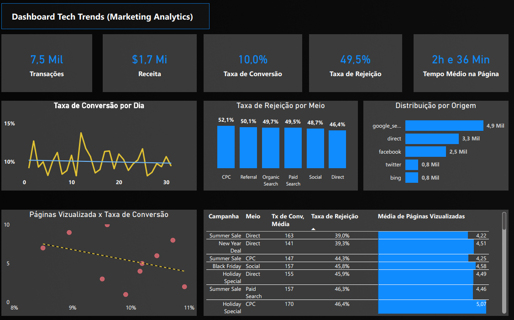
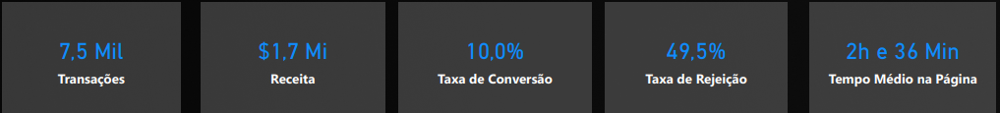
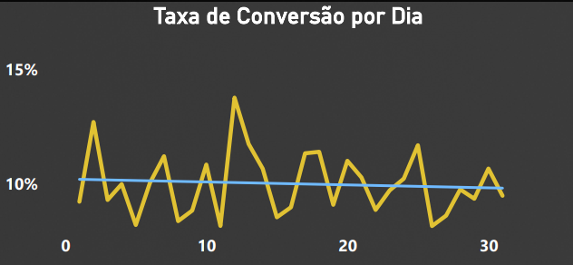
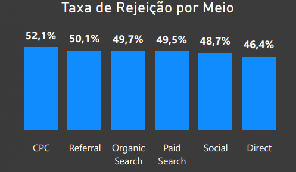
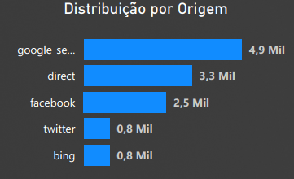
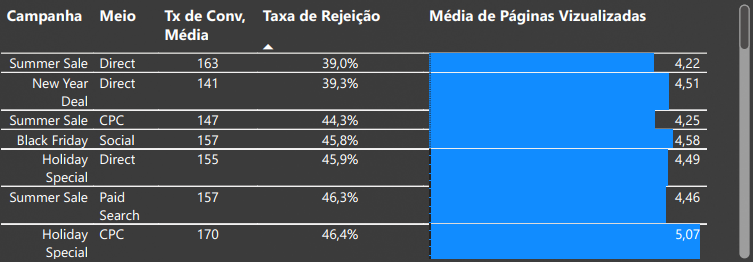

Projeto: Dashboard Tech Trends - Análise de Marketing Digital
Introdução
Este projeto apresenta um Dashboard de Marketing Analytics, construído para fornecer uma visão abrangente do desempenho das campanhas digitais e do comportamento do usuário. O objetivo principal é capacitar as equipes de marketing a monitorar métricas chave como transações, receita, taxas de conversão e rejeição, e tempo médio na página, permitindo uma análise aprofundada por canal e campanha. O painel visa otimizar a alocação de recursos, identificar canais de maior performance e refinar estratégias para maximizar o retorno sobre o investimento em marketing digital.
Estrutura do Projeto
Os principais requisitos e indicadores desenvolvidos para esta análise foram:
- Visão Geral de Performance: Exibição dos totais de Transações, Receita, Taxa de Conversão Geral, Taxa de Rejeição Geral e Tempo Médio na Página.
- Tendência Diária da Taxa de Conversão: Gráfico de linha para visualizar a variação da taxa de conversão ao longo dos dias, identificando picos e vales.
- Performance por Canal de Tráfego: Análise da Taxa de Rejeição por Meio (CPC, Referral, Organic Search, Social, Direct, Paid Search) para avaliar a qualidade do tráfego.
- Distribuição de Tráfego por Origem: Quantificação do tráfego proveniente de diferentes plataformas e fontes (Google, Facebook, Twitter, Direct, Bing).
- Análise de Desempenho de Campanhas: Tabela detalhada apresentando Taxa Média de Conversão, Taxa de Rejeição e Média de Páginas Visualizadas por Campanha e Meio, permitindo uma avaliação granular da efetividade.
Tecnologias Utilizadas
Para a construção deste dashboard analítico, as ferramentas empregadas foram:
- Power BI Desktop: Para conectar as fontes de dados, realizar a modelagem e transformação necessárias, e desenvolver os visuais interativos que compõem o dashboard.
- Figma: A prototipação e o design do dashboard foram feitos com o Figma, garantindo uma experiência de usuário intuitiva e visualmente atraente.
Processo de ETL (Extração, Transformação e Carregamento)
O processo de ETL para o Dashboard Tech Trends foi:
- Extração: Os dados foram extraídos de uma base de dados que contém informações de marketing digital, provavelmente de plataformas de análise de tráfego web. Os dados foram fornecidos em um arquivo
.csv, contendo métricas de desempenho por dia, canal, campanha e origem. - Transformação: No Power Query, parte integrante do Power BI, diversas operações de limpeza e enriquecimento foram realizadas. Isso incluiu:
- Tratamento de valores ausentes ou inconsistentes.
- Padronização de nomes de canais e campanhas.
- Carregamento: Após as etapas de extração e transformação, os dados foram carregados no modelo de dados do Power BI, estando prontos para alimentar todos os gráficos e tabelas do dashboard, permitindo a exploração interativa.
Dashboard
O dashboard apresenta um design limpo e funcional, com indicadores chave em destaque para uma compreensão imediata da performance geral. Os visuais são organizados de forma lógica, incluindo gráficos de linha para tendências, gráficos de barras para comparações entre canais e origens, e tabelas detalhadas para a performance de campanhas. A interatividade é um ponto forte, permitindo que os usuários explorem os dados a fundo, filtrando por diferentes dimensões e obtendo insights específicos para suas necessidades de marketing.

Insights
A análise dos dados apresentados no dashboard revelou insights valiosos sobre a performance das estratégias de marketing digital:
- Visão Geral da Performance de Marketing:
- O dashboard destaca indicadores essenciais: 7,5 mil transações, gerando $1,7 milhão em receita.
- A taxa de conversão geral é de 10,0%, enquanto a taxa de rejeição é de 49,5%.
- Um ponto que chama a atenção é o tempo médio na página de 2 horas e 36 minutos. Embora seja um indicador de engajamento, um tempo tão elevado pode sugerir um conteúdo muito denso ou a necessidade de otimizar a jornada do usuário para conversão mais rápida, dependendo do tipo de negócio.

- Tendência da Taxa de Conversão por Dia:
- O gráfico de linha “Taxa de Conversão por Dia” mostra a flutuação diária da taxa de conversão. Com rótulos de data explícitos, a visualização permite identificar os dias de maior e menor performance, auxiliando no planejamento de ações em dias específicos.

- Taxa de Rejeição por Meio de Tráfego:
- A Taxa de Rejeição por Meio é um indicador crítico da qualidade do tráfego. O “Direct” (Mensagem Direta) apresenta a menor taxa de rejeição, com 46,4%, indicando que este canal atrai visitantes mais qualificados.
- Em contrapartida, o canal “CPC” (Custo por Clique) tem a maior taxa de rejeição, atingindo 52,1%. Isso sugere que, embora possa gerar tráfego, parte desse tráfego pode não ser tão relevante ou engajada.

- Distribuição de Tráfego por Origem:
- As principais origens de tráfego são Google Search (4,9 mil)** e Direct (3,3 mil).
- O Facebook (2,5 mil) também contribui significativamente, enquanto o tráfego “Bing” (0,8 mil) e “Twitter” (0,8 mil) são menores. Este insight é fundamental para entender de onde vêm os usuários e para otimizar o investimento em diferentes plataformas.

- Desempenho Detalhado de Campanhas:
- A tabela “Média de Taxa de Conversão, Taxa de Rejeição, Média de Páginas Visualizadas” por Campanha e Meio oferece insights valiosos:
- A campanha “Summer Sale” via tráfego “Direct” apresenta a mais baixa Taxa de Rejeição (39%) e uma média de páginas visualizadas de 4,22.
- A campanha “New Year Deal” via “Direct” se destaca pela segunda menor Taxa de Rejeição (39,3%), o que, combinado com uma média de páginas visualizadas de 4,51 , indica um tráfego de altíssima qualidade e engajamento.
- As campanhas (Summer Sale) via CPC e Black Friday via Social também mostram fortes resultados em conversão e páginas visualizadas, sugerindo que o canal CPC, apesar da alta taxa de rejeição geral, pode ser muito eficaz quando direcionado a campanhas específicas.
- A campanha “Black Friday” via “Direct” possui a maior taxa de rejeição entre as listadas (56,5%), mas ainda assim é um resultado considerável.
- A tabela “Média de Taxa de Conversão, Taxa de Rejeição, Média de Páginas Visualizadas” por Campanha e Meio oferece insights valiosos:

Considerações
O dashboard oferece insights acionáveis para otimizar as estratégias de marketing digital. A partir dos dados apresentados, algumas considerações importantes surgem:
- Otimização de Canais de Tráfego: A empresa deve investigar a causa da alta taxa de rejeição do canal CPC. Se a taxa for muito alta para o CPC geral, pode ser necessário ajustar a segmentação de público-alvo ou a relevância dos anúncios para atrair usuários mais engajados. Em contraste, o “Direct” deve ser priorizado, dada sua menor taxa de rejeição, indicando maior qualidade do tráfego.
- Capitalização de Campanhas de Sucesso: As campanhas de “Summer Sale” (tanto Direct quanto CPC) são exemplos de sucesso. É crucial analisar os fatores que as tornaram tão eficazes (oferta, criativos, segmentação) e replicar esses aprendizados em futuras campanhas.
- Análise do Tempo na Página: O tempo médio de 2h 36min é um dado atípico para a maioria dos sites de marketing. É fundamental entender se esse alto valor é intencional (ex: conteúdo de vídeo longo, cursos) ou se há alguma disfunção no tracking. Se for intencional, o foco deve ser em como monetizar esse engajamento. Se não, investigar e corrigir problemas de usabilidade ou carregamento.
- Alocação de Investimento em Mídia: A dominância de Google, Direct e Twitter como fontes de tráfego valida o investimento nessas plataformas. A empresa pode considerar explorar ainda mais o potencial desses canais, enquanto avalia a viabilidade de expandir ou otimizar o desempenho em fontes menores como Bing.
Conclusão
O dashboard é uma ferramenta analítica poderosa que transforma dados brutos de marketing em inteligência acionável. Sua principal contribuição reside na capacidade de:
- Oferecer uma visão clara da performance geral das campanhas digitais e do comportamento do usuário.
- Identificar a qualidade do tráfego por diferentes canais e a eficácia de campanhas específicas.
- Fornecer insights sobre as principais origens de tráfego, auxiliando na alocação estratégica de recursos.
Este projeto demonstra a habilidade em criar soluções de Business Intelligence que capacitam equipes de marketing a tomar decisões baseadas em dados, otimizar o desempenho de campanhas e, em última instância, impulsionar transações e receita em um ambiente digital competitivo.